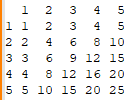

Задания идут от простого к сложному.
Написать метод/функцию, который/которая на вход принимает массив городов. В качестве результата возвращает строку, где города разделены запятыми, а в конце стоит точка. Пример: «Москва, Санкт-Петербург, Воронеж.»
/**
* Превращает массив городов в список с запятыми и точкой в конце.
*
* @param {*} arrayOfCities - массив с названиями городов
* @returns строка, в которой города разделены ',' и в конце '.'.
*/
let citiesList = ['Paris', 'Madrid', 'Rome', 'London'];
function makeLine(arrayOfCities) {
const commasList = arrayOfCities.join(', ');
const finalList = commasList + '.'
return finalList
}
Написать метод/функцию, который/которая на вход принимает число (float), а на выходе получает число, округленное до пятерок. Пример: 27 => 25, 27.8 => 30, 41.7 => 40.
Enter any number.
Число появится тут.
/**
* Функция принимает число и округляет его до 5.
*
* @param {*} x - число к округлению
* @returns число, округленное до 5
*/
function roundToFive(x) {
return Math.round(x/5) * 5;
}
Написать метод/функцию, который/которая на вход принимает число (int), а на выходе выдает слово “компьютер” в падеже, соответствующем указанному количеству. Например, «25 компьютеров», «41 компьютер», «1048 компьютеров».
Enter any number.
Форма слова появится тут.
/**
* функция принимает число и указывает правильный падеж слова "компьютер" для этого числа
*
* @param {*} x - число
* @returns - правильный падеж слова "компьютер"
*/
function guessCaseByNumber(x) {
let nounCase = ''
if (/^1$|[^1]1/.test(x) == true) {
nounCase = 'komputer'
}
else if (/^2$|^3$|^4$|[^1]4/.test(x) == true) {
nounCase = 'komputera'
}
else {
nounCase = 'komputerov'
}
return nounCase
}
Написать метод/функцию, который/которая на вход принимает целое число, а на выходе возвращает то, является ли число простым (не имеет делителей кроме 1 и самого себя).
Enter any number.
Ответ появится тут. True - число простое. False - число не простое.
/**
* Функция показывает, является ли число простым
*
* @param {*} x - число на проверку
* @returns true - число является простым, false - число НЕ является простым
*/
function primeTester(x) {
const testArray = [];
for (let i = 2; i < x; i++)
testArray.push(i);
const resultsArray = []
testArray.forEach((element) => {
let divisibilityTest = x/element
if (Number.isInteger(divisibilityTest) == true) {
let elementResult = true /*делится*/
resultsArray.push(elementResult);
}
else {
let elementResult = false /*не делится*/
resultsArray.push(elementResult);
}
})
answer = resultsArray.every((element) => {
return element == false})
return console.log('Ваше число простое: ' + answer)
}
Написать метод, который определяет, какие элементы присутствуют в двух экземплярах в каждом из массивов (= в двух и более, причем в каждом). На вход подаются два массива. На выходе массив с необходимыми совпадениями. Пример: [7, 17, 1, 9, 1, 17, 56, 56, 23], [56, 17, 17, 1, 23, 34, 23, 1, 8, 1] На выходе [1, 17]
const array1 = [7, 17, 1, 9, 1, 17, 56, 56, 23]
const array2 = [56, 17, 17, 1, 23, 34, 23, 1, 8, 1]
/**
* функция находит дубликаты в двух массивах, а затем показывает, какие дубликаты общие в обоих массивах
*
* @param {*} array1 массив 1
* @param {*} array2 массив 2
* @returns массив с найденными дубликатами
*/
function searchArrays(array1, array2) {
/*найти повторы в массиве и сохранить в новом массиве не дублируя значения*/
function findDuplicates(arr) {
const filtered = arr.filter((item, index) => arr.indexOf(item) !== index);
return [...new Set(filtered)]
}
const duplicatesFromArray1 = findDuplicates(array1)
const duplicatesFromArray2 = findDuplicates(array2)
const duplicatesMerged = duplicatesFromArray1.concat(duplicatesFromArray2)
const duplicatesInBoth = findDuplicates(duplicatesMerged)
return console.log(duplicatesInBoth)
}
searchArrays(array1,array2)
Написать метод, который в консоль выводит таблицу умножения. На вход метод получает число, до которого выводит таблицу умножения. В консоли должна появиться таблица. Например, если на вход пришло число 5, то получим:

Важно:
● В последней строке между числами ровно по одному пробелу должно выводиться.
● В каждом столбце числа должны быть выровнены по правому краю.
Enter an integer.
Таблица появится здесь.
/**
* Выводит в консоль таблицу умножения
*
* @param {*} maxMultiplier - максимальный множитель в таблице
* @returns таблица умножения в консоли
*/
function makeTable(maxMultiplier){
const arrayTable = [] /*создаем массив в который пойдут массивы-строки*/
/*создаем образец последней строки (для выравнивания в будущем)*/
function createLastArray(maxMultiplier) {
let lastRow = [maxMultiplier]
for (let i = 1; i <= maxMultiplier; i++)
lastRow.push(i*maxMultiplier)
return lastRow
}
lastRowSaved = createLastArray(maxMultiplier)
/*переводим массив элементов последней строки таблицы
в массив количества символов в каждом элементе*/
columnWidthArray = []
lastRowSaved.forEach((element) => {
let newString = element.toString()
let newWidth = newString.length
return columnWidthArray.push(newWidth)
})
/*функция по индексу элемента массива возвращает его значение*/
function maxWidthTeller(array, index) {
return array[index]
}
/*функция принимает на вход массив и индекс элемента,
на выход дает количество пробелов чтобы уровнять элемент с самым широкими элементом столбца*/
function spaceAdder(array, index){
let wantedWidth = maxWidthTeller(columnWidthArray, index)
let elementString = array[index].toString()
const factualWidth = elementString.length
const spaces = ' '.repeat(wantedWidth - factualWidth)
return spaces
}
/*создаем особую первую строку*/
function createFirstArray(maxMultiplier) {
let firstRow = ['']
firstRow[0] = spaceAdder(firstRow, 0) + ''
for (let i = 1; i <= maxMultiplier; i++) {
firstRow.push(i)
firstRow[i] = spaceAdder(firstRow, i) + i /*пишем элементы в массив с пробелами для выравнивания*/
}
firstRowString = firstRow.join(' ') /*здесь оставим пробел*/
arrayTable.push(firstRowString)
}
createFirstArray(maxMultiplier)
/*создаем обычные строки в таблице*/
for (let i = 1; i <= maxMultiplier; i++) {
function createArray(i, maxMultiplier) {
let newRow = [i]
newRow[0] = spaceAdder(newRow, 0) + i
for (let i2 = 1; i2 <= maxMultiplier; i2++) {
newRow.push(i*i2)
newRow[i2] = spaceAdder(newRow, i2) + i*i2 /*пишем элементы в массив с пробелами для выравнивания*/
}
newRowString = newRow.join(' ')
arrayTable.push(newRowString)
}
createArray(i, maxMultiplier)
}
arrayTableString = arrayTable.join('\n')
return console.log(arrayTableString)
}